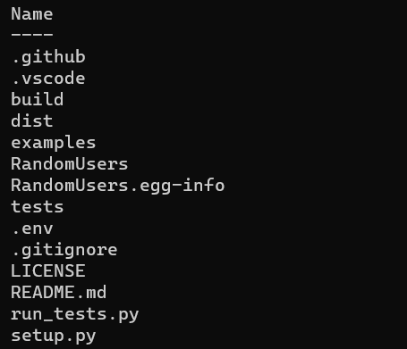

前情提要
前陣子在滑 GitHub 的時候看到有朋友寫了個 python 的套件，所以就覺得自己也可以來試試看，於是就花了一些時間寫出了 RandomUsers 這個套件。
自己其實覺得這個套件沒有太大用途，但既然剛好有個機會嘗試新事物，何樂而不為。所以這篇文章就是一些經驗，給別人看的同時也留給自己當筆記。
前陣子在滑 GitHub 的時候看到有朋友寫了個 python 的套件，所以就覺得自己也可以來試試看，於是就花了一些時間寫出了 RandomUsers 這個套件。
自己其實覺得這個套件沒有太大用途，但既然剛好有個機會嘗試新事物，何樂而不為。所以這篇文章就是一些經驗，給別人看的同時也留給自己當筆記。
首先，我們要安裝一些必要的套件。
第一個 twine 是最後上傳到 PyPI 會用到的工具，而第二個 setuptools 則是隨後要寫 setup.py
會用到的套件，會讓寫 setup.py 的過程輕鬆很多。
以下是完成之後的檔案結構。

首先我們必須先寫 setup.py，它裡面包含了整個套件所需的資訊。以下是一個簡單的範例。
雖然有很多欄位，但其實都不是必需的，只是 build 完會變出一些 UNKWONE 之類的名字，所以正常來說還是要填。
基本上 name、version、packages 是比較重要的欄位，其他的欄位就比較可選擇不填，下面我們分項說明。
name 是指這個 package 的名字，就是別人要安裝套件時要打的。
version 顧名思義就是版本，可以參考 PEP 440 --
Version Identification and Dependency
Specification 的規則，這邊我直接使用 x.x 來命名。
packages 是這個套件裡面要包含的package，在上面的範例我用 setuptools 提供的
find_packages 來自動尋找，也可以加上
exclude
的選項來去掉不該被包進去的 package，像是 tests、docs 等等，也可以直接指定，像是使用
packages=["mypackage"]。
description 是對於這個套件的簡短描述，會在 PyPI 看到他。而 long_description 會出現在 PyPI 網站的
Project description 部分，我直接拿會顯示在 GitHub 的 README.md 來用。也因為是直接拿它來用，所以要記得設定
long_description_content_type，不然他會以純文字顯示。
author 和 author_email 是自己本人的資訊，url 是這個專案的網址，我選擇放 GitHub
repo，畢竟也沒有其他可放，也因為放 GitHub repo，所以 PyPI 有顯示 GitHub statistics。license 可以選擇自己喜歡的。上述幾項都會在
PyPI 的網站看到。
install_requires 包括了這個套件所需的其他第三方套件，如 requests、numpy
等等。如果要指定版本的話要使用 extras_require，使用可以參考 GitHub
pyTelegramBotAPI/setup.py。如果對 python 版本有需求的話，可以使用 python_requires。
classifiers 是一些資訊，官方稱之為
A list of strings describing the categories for the package，也會顯示在 PyPI 的頁面上。
如果需要更詳細的說明或更多欄位的用途，可以參考官方 Keywords。而這些資料除了可以直接寫在
setup.py，也可以寫在 setup.cfg，但我這邊就不提這個方式，有需要的話可以參考 setuptools:
Quickstart 的轉換。